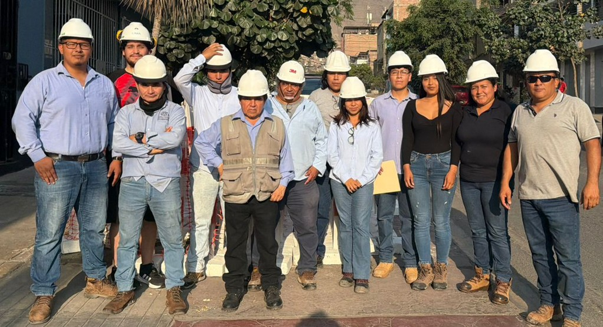

Nosotros
Una constructora de Lima Norte, trabajando en Lima Norte
Constructora y Proyectos B&M S.A.C. ejecuta obras civiles, instalaciones eléctricas e hidráulicas y servicios de ingeniería. Desde 2022 trabajamos con entidades públicas del cono norte.
Nuestras obras están en Los Olivos e Independencia: pistas, veredas, sardineles, parques, escaleras y muros de contención en asentamientos humanos y urbanizaciones.
Conocer la empresa